本章专门介绍两种在营销应用中非常有用的方法。无监督学习有许多有趣的应用，在这种情况下，为了优化促销活动、推荐或营销策略，有必要构建企业关于客户的知识。本章展示了如何利用一种特定的聚类来发现客户和产品集合之间的相似性，以及如何提取描述和综合客户从目录中选择产品的行为的逻辑规则。使用这些规则，营销人员可以了解如何优化他们的促销活动，如何重新安排他们产品的位置，以及在购买时可以成功推荐哪些其他商品。
特别是，我们将要分析的算法和主题是:
我们要分析的第一个算法是一种特殊的聚类，它同时在两个级别上运行。一般来说，这两个级别通过媒介的存在而相互关联(例如，客户和产品可以通过评级相互关联)，双聚类的目标是通过重新安排两个级别(或视图)的结构来找到这种媒介具有内聚性的区域(例如，评级高或低)。
Biclustering 是一个对矩阵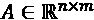进行操作的方法家族，矩阵的行和列代表与精确原理相关的不同特性。例如，行可以表示客户，列可以表示产品。每个元素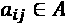可以指示一个评级，或者如果为零，则指示特定产品pj、cI 没有被客户购买/评级的事实。由于客户的行为通常可以分割成特定的集合，我们可以假设 A 具有底层的棋盘结构，其中称为双聚类的紧凑区域表示具有特殊属性的子矩阵。
这些属性的性质取决于具体的环境，但这些结构都有一个共同的特点，就是与其余区域有很大的区别。在我们的示例中，双聚类可以是包含同意评级的客户和产品集的混合段(这个概念在实际示例中会更清楚)，但是更一般地，重新排列 A 的行和列可以突出显示不能立即检测到的高度相关的区域。
在这种情况下，我们将描述一种由 Kluger 等人开发的算法(发表在 Kluger Y .，Basri R .，Chang J. T .，和 Gerstein M .，Spectral Biclustering of Microarray Cancer Data:Co-clustering Genes and Conditions， Genome Research，13，2003)，该算法被称为 Spectral Biclustering(术语 co-clustering 通常被用作 bi clustering 的同义词，但是当涉及不同的算法时避免混淆是很重要的)，并且最初被应用于生物信息学任务。该算法强烈依赖于奇异值分解 ( SVD )，在讨论分量分析和简化时将被广泛使用。
第一步称为二值化，是预处理迭代阶段，需要调整值aT31】ij，使得所有列和行的总和等于一个恒定的公共值(通常为 1)。该名称源自随机矩阵的定义(换句话说，所有行或列总计为 1)，因此结果是 A 和ATT相对于列是随机的。这个步骤的优点是减少例如由不同尺度引起的噪声，并揭示以大/小变化为特征的区域。
然后使用奇异值分解对随机矩阵 A b 进行分解(进一步的细节将在第 13 章、分量分析和维数缩减中讨论):
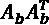和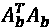的特征向量分别称为 A b 的左右奇异向量。矩阵 U 包含左奇异向量作为列，而 V 包含右奇异向量。
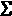对角线上的值是奇异值，是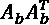(和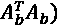的特征值的平方根。SVD 通常以降序对奇异值进行排序，并且奇异向量根据该标准重新排列。
双聚类的目标是突出棋盘结构，它可以使用特定的指示向量来表示，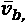由分段常数结构构建，例如:
不难理解，这样一个向量在内部被分割成同质分量，可以表示(在一维投影中)我们正在寻找的双星系团。该算法通过分析奇异向量与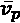(其结构也取决于矩阵 A 的维数)的相似性来对奇异向量进行排序。如果用 k 表示双聚类的期望数量，则使用顶部 k 奇异向量构建投影矩阵PT22】k。数据集(由 A 表示)然后被投影到由PT30】k 的列跨越的子空间上。此时，棋盘结构很容易被发现，因为在新子空间中，双簇由彼此靠近的点组成(换句话说，它们组成了由空的点分隔的密集区域)。
为了更好的阐明这个概念，我们来考虑一下PT38】k 的第一列cT34】1。根据定义，它包含与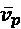相似度最高的奇异向量。执行投影后，旋转原始的第一个组件，使其与cT43】1 重叠。对所有剩余组件重复该过程。因此，在这个新的参考系统中，原始点将通过坐标(特征)相关联，指示它们相对于特定双星团的相似性。
该算法通过应用 K-Means 来为 k 个聚类寻找标记而结束。考虑行和列来执行该操作，产生两个标签向量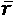和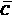。很容易证明(但我们跳过这一步)具有棋盘结构的重排矩阵是通过将外积应用于排序向量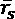和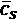(它们只是其分量已经按升序排序的原始向量)而获得的:
我们现在可以展示一个完整的 Python 例子，它基于一个包含几种购买组合的营销数据集。
在这个例子和下面的例子中，我们将使用一个包含 100 个购买组合的合成交易数据集，其形式为{ p i ，p j ，…，pk} 100 个产品和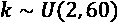。数据集由评级矩阵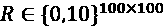丰富，其中 0 表示没有评级，值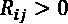被视为明确评级。这个示例的目标是使用双聚类来查找底层的棋盘结构。
让我们开始创建数据集:
import numpy as np
nb_users = 100
nb_products = 100
items = [i for i in range(nb_products)]
transactions = []
ratings = np.zeros(shape=(nb_users, nb_products),
dtype=np.int)
for i in range(nb_users):
n_items = np.random.randint(2, 60)
transaction = tuple(
np.random.choice(items,
replace=False,
size=n_items))
transactions.append(
list(map(lambda x: "P{}".format(x + 1),
transaction)))
for t in transaction:
rating = np.random.randint(1, 11)
ratings[i, t] = rating
评级矩阵的热图。黑色单元格表示没有评级
矩阵是稀疏的(当维数较大时，我建议使用 SciPy 稀疏矩阵以节省空间)，但每个用户至少评价了 2 个产品，平均大约为 30 个。在这个例子中，我们感兴趣的是发现具有相同评级的用户/产品组合的细分市场。由于每个评级在范围(1，10)内，也考虑非评级段，有 10 个不同的可能的具有立即语义的双聚类。
此时，我们可以使用n_best=5来训练模型，以表明我们希望将数据集投影到前五个奇异向量和svd_solver="arpack"上，这是一种非常精确的 SVD 算法，适用于中小型矩阵:
from sklearn.cluster.bicluster import SpectralBiclustering
sbc = SpectralBiclustering(n_clusters=10, n_best=5,
svd_method="arpack",
n_jobs=-1,
random_state=1000)
sbc.fit(ratings)
rc = np.outer(np.sort(sbc.row_labels_) + 1,
np.sort(sbc.column_labels_) + 1)
正如在理论部分所解释的，最终的矩阵是使用排序的行和列索引的外积来计算的。
在展示最终结果之前，我们想演示一下如何找到混音。假设我们有兴趣确定一组用户{uT5]I，uT9]j，…，uT13]t}，这些用户对一组八个产品进行了评级{pT17]I，pT21]j，…，pT25]t 这个操作可以通过选择与索引为 8 的双聚类相关联的所有行和列来容易地实现(记住 0 对应于没有评级):
import numpy as np
print("Users: {}".format(
np.where(sbc.rows_[8, :] == True)))
print("Product: {}".format(
np.where(sbc.columns_[8, :] == True)))
前面代码片段的原始输出(随机种子设置为 1，000)如下所示:
Users: (array([30, 35, 40, 54, 61, 86, 87, 91, 94], dtype=int64),) Product: (array([49, 68, 93], dtype=int64),)
因此，我们可以检查产品系列{49，68，93}，选择一些类似的项目，并在简讯的建议部分发送给用户{30，35，40，54，61，86，87，91，94}。我们现在可以展示具有棋盘结构的最终矩阵:
双聚类后评级矩阵的热图
正如可能看到的，矩阵被分成对应于相同评级的同质区域。在实际应用中，它可以帮助选择例如与评级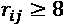相对应的 mix 来推荐相似的产品，以及 mix { u i ， r ij < 6}来询问关于其负面评级的反馈。我将把这两个案例作为练习留给读者。
在讨论了双聚类之后，现在让我们分析一种简单而有效的方法来执行购物篮分析，并在给定一组交易的情况下找到关联规则。
在前面的示例中，我们分析了不同客户提供的评级，以便执行混合细分。然而，有时，一家公司只对其客户购买的产品有完整的了解。更正式的说法是，给定一组P= {P1， p 2 ，…， p n }的产品，一笔交易， T i ，是 P 的子集:
事务的集合(通常称为数据库)是一组子集，TII:
购物篮分析的主要目标是挖掘所有可用通用形式表达的现有关联规则:
为了避免混淆，前面的表达式意味着，给定包含一组项目的事务，找到项目pt 的概率大于一个判别阈值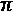(例如，0.75)。这一过程的价值很简单，因为公司可以根据实际交易提供的证据优化其报价。例如，零售商可以发现购买特定型号智能手机的客户也会购买一个手机套，因此可以提供特别优惠，吸引更多客户。
不幸的是，所有可能事务的数量， N T ，等于 P 的幂集的基数。如果我们将自己局限于某个项目的存在/不存在，NT8】T= 2N，这很容易导致棘手的问题(例如，如果只有 1000 种产品，NT14】T 是一个超过 300 位的数字)。由于这个原因，Agrawal 和 Srikant(在 Agrawal R .，Srikant R .，挖掘关联规则的快速算法，第 20 届 VLDB 会议论文集，1994)提出了一种算法，称为 Apriori，其目标是允许在合理的时间内挖掘相对较大的数据集(考虑到该论文发表于 1994 年，读者可以很容易地想象现在这个过程是多么简单)。
给定集合 D 上的离散概率分布，区域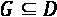中的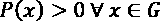称为分布的支撑。给定一个一般规则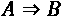，其概率置信度为 P(A，B) 的支持度与 P(A) 的支持度之比。当定义该算法所采用的策略时，我们将在后面使用并进一步分析这些概念。
Apriori 算法的主要假设是只有一小部分概率空间有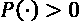(换句话说，有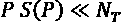的支持)。特别是，当处理大型数据集时，有效组合的数量只占功效集的很小一部分，因此尝试对完整的联合概率分布建模是没有意义的。
由于我们处理的是离散变量，所以可以用一个频数来计算一个项目 p i 或一个项目集合{ p i ， p j ，…， p k }的支持度。给定一个事务中的最大项目数，Apriori 开始计算所有产品S(pI)的支持度，并用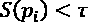(用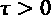)删除所有项目。的确，我们对很少销售的产品不太感兴趣。因此，第一个选择可以被认为是对所有最常见事务所在区域的放大。Apriori 通过分析所有夫妇、三胞胎等并应用相同的过滤器进行处理。每一遍的结果都是项目集，这些项目集可以被分割成互不相关的子集，以构成关联规则。例如:
规则具有逻辑蕴涵的标准格式，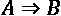，其中 A 是前因， A 是后果。当然，必须清楚的是，虽然在命题逻辑中，前面的表达式是确定性的，但在购物篮分析中，它总是概率性的。因此，引入一种方法来评估每个规则的有效性是很有帮助的。继续采用逻辑方法，我们可以扩展犯罪现场的概念，即:
在概率场景中，当整个规则为真时，我们感兴趣的是量化结果为真的频率。换句话说，给定原始项目集(拆分前) S(I) 的支持度，并且假设 I 已经被拆分成{ A ， B }，一个常见的度量是规则 C(I) (通常表示为一个项目集)的置信度:
该值总是可以计算为阈值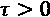；因此，分子和分母都不能为空。如果规则总是适用， S(A) = S(I) 和 C(I) = 1 ，而范围(0，1)中的所有其他值表示越来越不频繁的规则。由于置信度可以立即计算(所有数据在步骤中已经可用)，Apriori 允许设置另一个阈值，排除所有那些符合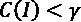(带有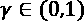)的规则。
该算法极其简单有效，但也有一些明显的缺点。最大的问题是当数据集非常大时，必须设置大的阈值。事实上，大多数现代 B2C 公司都有数百万对小部分商品感兴趣的用户。普通 Apriori 算法的应用可能会排除大量对特定客户有效的自定义规则。因此，在所有这些情况下，最好先对客户进行初步细分，然后对每个交易子集应用先验知识。另一个可行的策略是基于交易一般化的过程，该过程包括将交易TT7】I 转换成特定的特征向量，该特征向量包含也代表项目的大子集的虚拟产品:
元素fT11】I 不是真实的产品，而是包含类似项目的类。这种方法的优点是允许基于规则的联合支持的快速推荐，或者在更高级的场景中，基于由交易激活的最后 k 规则的联合子集(换句话说，客户最后购买的产品比非最近交易中出现的产品具有更高的优先级)。
我们现在可以使用efficient-apriori Python 库(在https://pypi.org/project/efficient-apriori/上可用，可以通过使用pip install -U efficient-apriori命令安装)来挖掘在前面的示例中创建的事务数据集，并且检测所有最大长度等于 3 的规则。由于数据集很小，我们将设置min_support = 0.15，但我们希望确保找到可靠的规则，因此最小置信度设置为等于0.75。我们还设置了参数verbosity=1来显示整个学习过程中的信息:
from efficient_apriori import apriori
_, rules = apriori(transactions,
min_support=0.15,
min_confidence=0.75,
max_length=3,
verbosity=1)
前面代码片段的输出是:
Generating itemsets. Counting itemsets of length 1. Found 100 candidate itemsets of length 1. Found 100 large itemsets of length 1. Counting itemsets of length 2. Found 4950 candidate itemsets of length 2. Found 1156 large itemsets of length 2. Counting itemsets of length 3. Found 6774 candidate itemsets of length 3. Found 9 large itemsets of length 3. Itemset generation terminated. Generating rules from itemsets. Generating rules of size 2. Generating rules of size 3. Rule generation terminated.
读者可以立即识别理论部分描述的步骤。特别地，该算法通过定义项目集(从长度 1 开始并以期望的限制结束)并过滤掉支持度低于最小阈值(0.15)的元素来进行。现在让我们检查已经发现的规则:
print("No. rules: {}".format(len(rules)))
for r in rules:
print(r)
输出如下所示:
No. rules: 22
{P31, P79} -> {P100} (conf: 0.789, supp: 0.150, lift: 2.024, conv: 2.897)
{P100, P79} -> {P31} (conf: 0.789, supp: 0.150, lift: 2.134, conv: 2.992)
{P66, P68} -> {P100} (conf: 0.789, supp: 0.150, lift: 2.024, conv: 2.897)
{P100, P68} -> {P66} (conf: 0.750, supp: 0.150, lift: 2.419, conv: 2.760)
{P11, P97} -> {P55} (conf: 0.750, supp: 0.150, lift: 2.143, conv: 2.600)
{P11, P55} -> {P97} (conf: 0.789, supp: 0.150, lift: 2.024, conv: 2.897)
{P21, P7} -> {P15} (conf: 0.789, supp: 0.150, lift: 2.134, conv: 2.992)
{P15, P7} -> {P21} (conf: 0.750, supp: 0.150, lift: 2.206, conv: 2.640)
{P15, P21} -> {P7} (conf: 0.750, supp: 0.150, lift: 2.027, conv: 2.520)
{P46, P83} -> {P15} (conf: 0.789, supp: 0.150, lift: 2.134, conv: 2.992)
{P15, P83} -> {P46} (conf: 0.750, supp: 0.150, lift: 1.974, conv: 2.480)
{P15, P46} -> {P83} (conf: 0.789, supp: 0.150, lift: 2.322, conv: 3.135)
{P59, P65} -> {P15} (conf: 0.750, supp: 0.150, lift: 2.027, conv: 2.520)
{P15, P65} -> {P59} (conf: 0.789, supp: 0.150, lift: 2.078, conv: 2.945)
{P55, P68} -> {P36} (conf: 0.750, supp: 0.150, lift: 2.419, conv: 2.760)
{P36, P68} -> {P55} (conf: 0.789, supp: 0.150, lift: 2.256, conv: 3.087)
{P36, P55} -> {P68} (conf: 0.789, supp: 0.150, lift: 2.024, conv: 2.897)
{P4, P97} -> {P55} (conf: 0.842, supp: 0.160, lift: 2.406, conv: 4.117)
{P4, P55} -> {P97} (conf: 0.800, supp: 0.160, lift: 2.051, conv: 3.050)
{P56, P79} -> {P47} (conf: 0.762, supp: 0.160, lift: 2.116, conv: 2.688)
{P47, P79} -> {P56} (conf: 0.842, supp: 0.160, lift: 2.216, conv: 3.927)
{P47, P56} -> {P79} (conf: 0.842, supp: 0.160, lift: 2.477, conv: 4.180)
因此，先验发现了 22 条长度为 2 的规则。置信度范围在(0.75，0.84)之间，而支持度总是接近 0.15(这是由于数据集的基数)。高置信度有助于排除所有低概率规则。然而，高置信度并不总是足以理解规则是基于大量还是少量的交易。
可以看到，在支持之后，算法输出一个名为 lift 的值，其定义为:
这个指标与规则的联合概率(换句话说，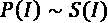)与前件和后件的概率乘积(换句话说，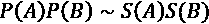)之间的比值成正比。比率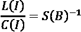；因此，考虑到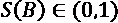和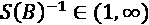，升力将总是大于或等于置信度。而且，由于 C(I) = L(I)S(B) ，对于一个固定的置信度， S(B) 越小， L(I) 必然越大。理想情况下，我们希望 lift 等于 1，表示所有事务都包含 B 中的元素。在现实情况下，这几乎是不可能的；因此，升力通常大于 1。
举个例子，对于一个 C(I)= 0.75 、 L(I) = 2 的规则，后件的支持度是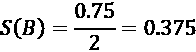。在我们的示例中，所有结果都包含一个值(这是购物篮分析的标准选择)。
因此，很容易将电梯与随机交易中找到产品的概率联系起来。在大多数实际情况下，在范围(1.5，2.5)内的提升是相当合理的，而具有例如对应于 S(B) < 0.05 的提升的规则不能被认为是足够可靠的，即使置信度很大。
另一方面，接近于 1 的 support S(B) 与一个无关紧要的规则相关联，因为大多数事务都包含该产品(例如，一家便利店可能意外地将购物袋包含在事务中，因此它们的 lift 通常接近于 1，但是推荐它们是没有意义的)。提升的最佳阈值取决于上下文，与置信度相反，最好定义一个区间，因为低值和高值对于所有受影响的规则都是负面的指示。
例如，一个 B2C 公司可以建立两个部分的通讯。在第一种情况下，它们可以包括具有大置信度( C(I) > 0.8 )和接近 2(通常对应于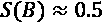)的 lift 的产品。这些建议得到了大量客户的认可。因此，有很高的转换概率。相反，在第二部分，有可能包括由一个利基客户群选择的具有较小 S(B) (换句话说，较大升力)的产品。
在这一章中，我们介绍了两个在营销场景中非常有用的算法。双聚类是一种对矩阵数据集执行聚类的方法，该矩阵数据集具有由中间因子关联的两个不同视图。该模型有助于发现这种数据集的棋盘式结构，并且可以在有助于发现共享相同介质因子的元素片段(例如，客户或产品)时使用。一个典型的应用是创建推荐系统，它可以立即识别一组客户和产品之间存在的相似性，并帮助营销人员提供具有高转换可能性的建议。
Apriori 是在大型交易数据集上执行购物篮分析的有效解决方案。它能够发现数据集中存在的最重要的关联规则，以便制定最佳营销策略。典型的应用是产品分类、促销计划，在某些情况下，还有物流计划。事实上，该算法可以应用于任何类型的事务性数据集，只要有帮助，还可以重新安排项目的位置(一般来说)，以便最大限度地减少完成最重要的事务所需的时间。
在下一章第 10 章、时间序列分析简介中，我们将向读者介绍广义线性模型和时间序列的概念，重点关注可用于实现复杂场景的主要技术和模型。